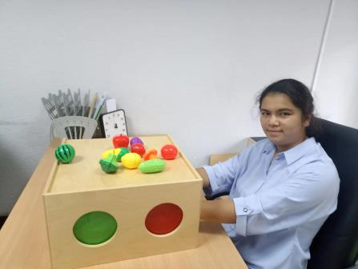
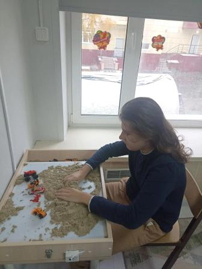
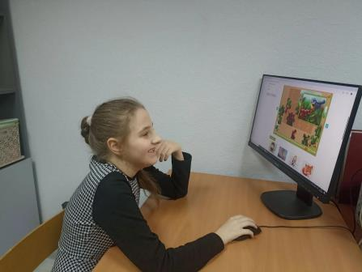
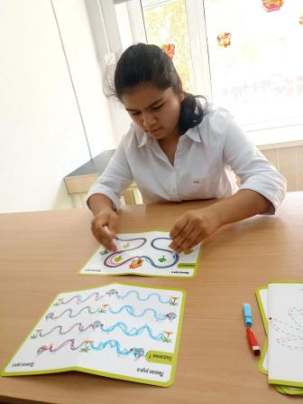
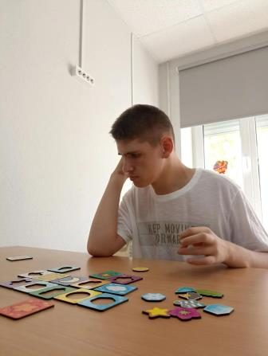
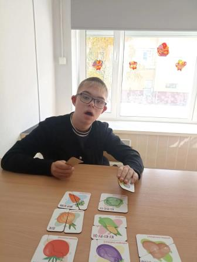
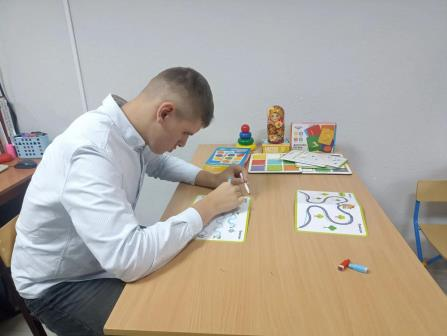
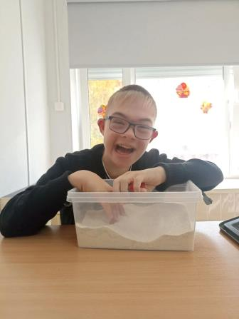
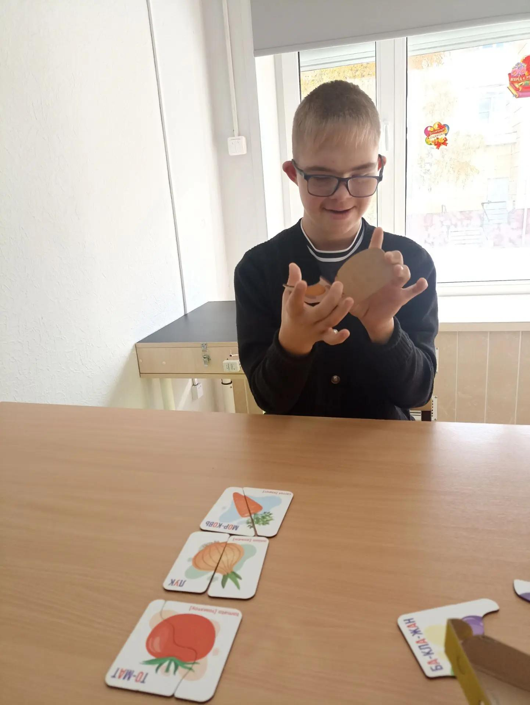

Психолог: поддержка и помощь
Одинаева Галина Васильевна
Психологическое сопровождение образовательного процесса, помощь детям и родителям.
Обращение педагога-психолога к родителям
Уважаемые родители!
Быть рядом с ребенком в его развитии — значит не только заботиться о нем, но и помогать ему верить в себя, чувствовать поддержку и уверенно идти вперед. Каждый ребенок уникален, и в каждом есть свои сильные стороны, таланты и возможности.
Моя задача как педагога-психолога — быть рядом с вами и вашим ребенком, помогать понимать его эмоциональное состояние, поддерживать в трудных ситуациях и находить пути решения возникающих вопросов. Важно помнить: внимательное отношение, терпение, любовь и уважение к особенностям ребенка создают прочную основу для его гармоничного развития.
Если вы замечаете, что ребенку трудно учиться, общаться, справляться с эмоциями или адаптироваться к новым условиям, не стоит оставаться с этим один на один. Совместная работа семьи и специалиста помогает ребенку чувствовать себя спокойнее, увереннее и успешнее.
Я всегда открыт(а) к сотрудничеству и готов(а) поддержать вас в вопросах воспитания, развития и эмоционального благополучия ребенка. Вместе мы можем создать условия, в которых ребенок будет расти, развиваться и раскрывать свой потенциал.
С уважением, педагог-психолог
📸 Фотографии детей и занятий








